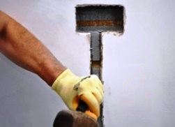

Качественный электромонтаж в Санкт-Петербурге и ленобласти, стаж 12 лет. Частный электрик, недорого и качественно.
Телефон - 8 904 642 08 57. Николай.

Установка подсветки потолка.
Частный электрик в СПБ.
Для нашего времени этот процесс совершенно не новый, однако вопросов, которые встают перед непосредственным началом работ множество. Так как же все-таки сделать все правильно и легко?
Какие составляющие входят:
Самый быстрый и простой вариант это приобрести в магазине множество лампочек накаливания, которые будут иметь маленькую мощность (примерно 10 ватт) и колбы, цвета которых различны. Также в магазине необходимо взять такое же количество патронов, саморезы с дюбелями, провода и выключатели для вашей системы.
Но сразу возникает вопрос: куда все это поместится?
В таких случаях сооружают либо козырьки, либо ниши. Все зависит от того каким количеством пространства вы первоначально располагаете. Лампы накаливания крайне доступны для установки, имеют доступную цену. Но их габариты достаточно велики и имеют ничтожно маленький КПД. По статистике, примерно одна двадцатая часть от всей подаваемой мощности превращается в поток света, все остальное преобразуется в тепло. В таком случае могут получиться разноцветные яркие пятна на потолке и дополнительное обогревание вашей комнаты.
Сколько стоит установить подсветку на потолок?
| Площадь подсветки в кв. м. | Цена за подсветку 1 кв. м. в руб. |
До 10 кв. м. |
От 400 руб. |
20 |
300 |
30 |
250 |
50 |
200 |
До 70 кв. м. |
180 |
До 100 кв. м |
160 |
От 100 кв. м. |
От 140 руб. |
Подсветка потолка с помощью люминесцентных ламп.
Ни для кого не секрет, что в одном столичном кафе потолок оформили по мотивам сказки Александра Грина “Алые Паруса”. Подсветка там осуществляется с помощью люминесцентных ламп. Очень романтично и имеет свое настроение. Тепла такие источники вырабатывают в разы меньше, но высота потолков, как подсказывает практика, у жилых помещений, всегда маловата для такой роскоши. К тому же, старые колбы, которые внутри содержат опасные пары ртути, очень проблемно утилизировать.
Есть неплохая замена-светодиодные лампы. В наше время они считаются самыми долгоиграющими, экономичными и современными. Срок беспрерывной работы иногда превышает десятилетия. Еще один плюс в том, что они не требуют специальной утилизации.
Подсветка потолка светодиодами.
Для создания световых пятен на потолке, также можно использовать светодиоды. Если есть идея использовать лучи, то ее можно реализовать с помощью светодиодных прожекторов. Если же нужны прямые линии или однотонный, равномерный фон, то оптимальный вариант светодиодные ленты. Их цвет крайне разнообразен, начиная от белого и желтого, заканчивая самыми яркими и выразительными оттенками. В продаже имеются ленты, которые в себе содержат три цвета. С помощью специального устройства они способны переключаться, в зависимости от времени и заданной программы. Максимальные размеры ленты-5 метров. Минимальный отрезок, который вы сможете приобрести, определяется видом светодиодных ламп и плотностью их посадки на ленте. Чем ярче и выразительнее светодиодная лента, тем короче ее длина. Единственный из существенных минусов светодиодов заключается в том, что для них требуются определенные источники питания, которые также занимают свободное место.
Как самостоятельно произвести установку:
Патроны вместе с лампами и люминесцентные лампочки прикрепляются к стене или козырьку с помощью саморезов и дюбелей. Кронштейны и кожухи прожекторов прикрепляются аналогично. Монтаж светодиодов значительно проще. Они крепятся на двусторонний скотч, о котором позаботился изготовитель. При установке необходимо использовать только медные провода и кабеля. Все установочные коробки обязаны находиться в свободном доступе.
Если вы осуществляете прокладку провода в труднодоступном месте, то позаботьтесь об изоляции, чтобы уменьшить вероятность возникновения пожара. Поверхность, на которую будет прикрепляться лента с подсветкой должна быть твердой, ровной и самое главное, чистой. К таким поверхностям относят: пластик, металл или окрашенные поверхности.
Необходимые при установке инструменты:
Для крепления вышеописанных элементов нам потребуется:
- дрель или перфоратор и соответствующие сверла к ним,
- молоток,
- шуруповерт или же отвертка.
Для удобного использования и управления светодиодными лентами вам может потребоваться устройство, которое внешне похоже на пульт от телевизора. Эффектность, удобное управление, маленькие размеры, надежность и долговечность делают светодиоды безоговорочным лидером в создании подсветки потолка. Она будет впечатлять снова и снова. И Вы точно останетесь довольны!

Сколько будут стоить материалы.
Электрика в загородном доме стоимость работ.

Замена электропроводки в панельном доме.
Расценки на электропроводку квартир.
Замена проводки в хрущевке.
Электромонтаж в частном доме.
Электрика в загородном доме.
Сколько стоит замена электропроводки в двухкомнатной квартире?.
Электрик в новостройку однокомнатная квартира недорого.

Сколько стоит поменять электропроводку в 3-х комнатной квартире.